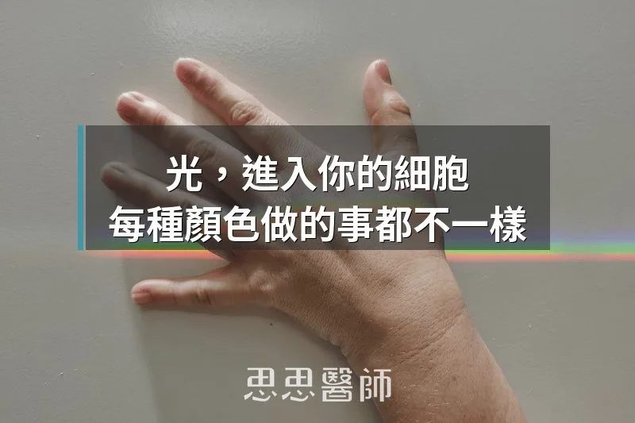
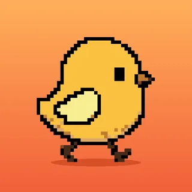

光，進入你的細胞，每種顏色做的事都不一樣

你可能從來沒把光當成一種「信號」。亮與暗、看得見與看不見，好像就是光的全部功能。但在細胞的層次，光是一份被主動解讀的訊息，跟你吃進去的食物一樣，會影響能量代謝、發炎反應、荷爾蒙分泌，甚至基因的表達方式。
你的細胞裡有一類分子叫做生色團（chromophores），就像天線一樣，專門吸收特定波長的光，把光的能量轉換成細胞能用的化學信號。這套系統跟視覺完全無關，它存在於皮膚、血管壁、肌肉，甚至腦部的神經元。不同波長的光打進來，觸動的機制截然不同——藍光在做一件事，紅光在做另一件事，近紅外線又是另外一回事。
這個領域的學術名稱叫「光生物調節」（Photobiomodulation，縮寫 PBM）。目前 PubMed 上已有數百篇相關臨床研究，覆蓋皮膚科、骨科、神經科。現代人的問題其實不只是「光照不足」，更是光譜組成被搞亂了：白天缺少對細胞有益的紅光和近紅外線，晚上又過度暴露在能量最強的藍光裡。
藍光（450–495 nm）：殺菌武器，但也是褪黑激素的剋星
藍光是可見光裡能量最高的波段，影響好壞高度取決於時機。好的一面：痤瘡丙酸桿菌（P. acnes）細胞裡含有卟啉（porphyrins），藍光照射後可活化這些卟啉產生活性氧，直接殺菌。臨床上藍光已被用作輕度痘痘的非抗生素替代療法，有隨機對照試驗支持。
不好的一面，你可能更需要了解。眼睛裡有一類特殊的感光細胞，含有黑視素（melanopsin），對波長約 480 nm 的藍光最敏感。這些細胞接收到藍光信號之後，會告訴松果體「現在是白天」，褪黑激素停止分泌。睡前滑手機真正的問題，不只是「大腦還在轉」，而是你的眼睛正在接收一個讓生理時鐘誤判時間的信號。藍光療法適合清晨短暫使用，晚上八點後的螢幕藍光則需要有意識地減少。
綠光（520 nm）：傷口癒合與血管新生
綠光的臨床文獻沒有紅光那麼豐富，但它有一個獨特的機制。研究顯示 520 nm 附近的波長可以活化轉化生長因子 β1（TGF-β1）信號通路，促進成肌纖維細胞（myofibroblasts）分化，加速膠原蛋白沉積與傷口癒合，並刺激血管新生（angiogenesis）。這也解釋了為什麼市售多波長 LED 面罩會把綠光納入設計，而不只是紅光和近紅外線的組合。
黃光與琥珀光（590 nm）：膠原的守護者，夜晚最友善的顏色
590 nm 附近的黃光有個值得關注的抗老機制：它可以抑制基質金屬蛋白酶-1（MMP-1）的表達。MMP-1 是皮膚老化時降解膠原蛋白的主要酵素之一，紫外線和氧化壓力都會刺激它大量分泌。從這個角度看，黃光是從分解端反向介入的抗老工具，不靠刺激合成，而是壓制損耗。
黃光還有一個附帶好處：在夜晚的光環境設計上，琥珀色和暖黃色的光源對褪黑激素的干擾遠低於藍光。燭光的橘紅色、老式鎢絲燈的暖橘，從生物學角度反而比現代白色 LED 更適合夜晚。這不是懷舊情懷，而是波長物理的邏輯。
紅光（620–700 nm）：文獻最充足，粒線體最直接受益
如果要在整個光生物調節領域選一個研究最完整的波段，是紅光。它的作用靶點是粒線體裡的細胞色素 c 氧化酶（cytochrome c oxidase）——也就是呼吸鏈的最後一個環節，負責把氧氣轉換成能量 ATP 的酵素。紅光照射後，這個酵素的活性提升，ATP 生成效率增加，同時細胞內的氧化壓力下降。
目前有臨床試驗記錄到的效益包括：抗發炎（調節 TNF-α、IL-6 等促發炎細胞激素）、促進膠原蛋白與彈性蛋白合成、緩解骨骼肌肉系統的慢性疼痛、改善傷口癒合（包括糖尿病患者的難癒合潰瘍）。
還有一件事很多人不知道：清晨陽光天然就富含紅光。太陽剛升起時，光線以低角度穿越大氣層，短波長的藍光大部分被散射掉，紅光和橘紅色波段反而占主導。這是早晨曬太陽在生物駭客清單上名列前茅的物理原因——你進行的，其實是一場免費的紅光光生物調節療法。
近紅外線（700–1000 nm）：穿透最深，連大腦都照得到
近紅外線（Near-Infrared，NIR）是目前最令研究者感到興奮的方向，原因只有一個：它的波長夠長，可以穿透皮膚、肌肉，甚至顱骨，直接作用在深層組織和腦部的神經元。
2025 年一項針對 98 名健康受試者的單盲隨機對照試驗，研究「經顱光生物調節」（transcranial photobiomodulation，NIR-TPBM）對視覺神經通路的影響。受試者被分為兩組，NIR 組對大腦額顳葉施以低能量近紅外光照射，對照組做假處理。結果顯示 NIR 組的視覺通路功能指標有顯著改善，推測機制是透過提升神經元的 ATP 合成效率和改善局部腦血流。
在認知功能方面，多項研究已記錄到近紅外線對輕度認知障礙和帕金森氏症患者的潛在幫助，機制包括減少神經發炎、提升腦源性神經滋養因子（BDNF）的濃度，以及改善神經元的粒線體能量代謝。這個方向目前仍在進行更大規模的臨床試驗，屬於初步但值得追蹤的發展。市售的近紅外線面板（波長 810–850 nm 為主）在關節深層疼痛和運動後肌肉修復上，已有相對完整的臨床支持。
把這些知識轉換成日常習慣
理解各波段的效應之後，實際操作有幾個清晰的原則。
最基礎、完全免費的是早晨曬太陽。太陽升起後頭一個小時，陽光裡的紅光和近紅外線成分最豐富，出門十分鐘，你在校正生理時鐘的同時，細胞也在進行光生物調節。即使陰天，戶外的光照強度也遠超一般室內照明，不需要直視太陽，讓光打在皮膚和臉上就夠了。
夜晚的目標是讓光譜往暖色移動。把室內照明換成色溫 2700K 以下的燈泡，或打開手機的夜間模式，讓松果體接收到「天黑了」的信號，褪黑激素在正確時機分泌。不是要你很早入睡，而是讓荷爾蒙節律不被藍光打斷。
如果想進一步使用紅光設備，有一個原則特別重要：光生物調節有雙相劑量反應（biphasic dose response）的特性。劑量太低，細胞的接收器不足以被活化；劑量太高，則可能反而產生氧化壓力，效果逆轉。目前文獻最常見的建議是距離皮膚 15–30 公分、每次 10–20 分鐘、每週 3–5 次。不是照越久越好，劑量要在窗口內才有效。
我們是從幾百萬年的戶外演化過來的物種。細胞的設計，本來就是要在全光譜陽光下運作：白天的紅光給粒線體充電，夜晚的黑暗讓褪黑激素正常出現。現代生活把這個節律全部顛倒了——白天在辦公室的日光燈下，紅光缺席；夜晚的手機螢幕把藍光送進眼睛，生理時鐘一直以為現在還是下午兩點。
光，一直是生物最古老的信號之一。你的細胞讀得懂每種顏色在說什麼，只是現代環境讓我們忘了怎麼給它正確的輸入。

空腹小雞跟思思醫師一起斷食，順便養一隻小雞來養小雞 →好朋友週信
每週五一封：《健康駭客週報》這集的研究重點，加上家醫專欄這週的新文章。免費，隨時可以退訂。